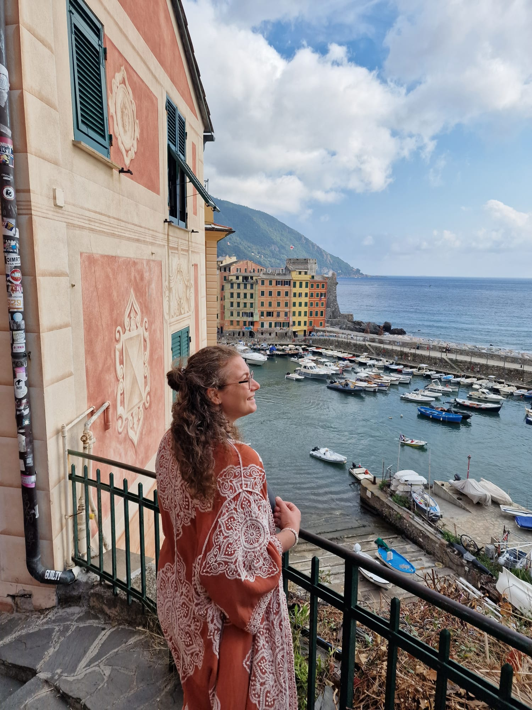
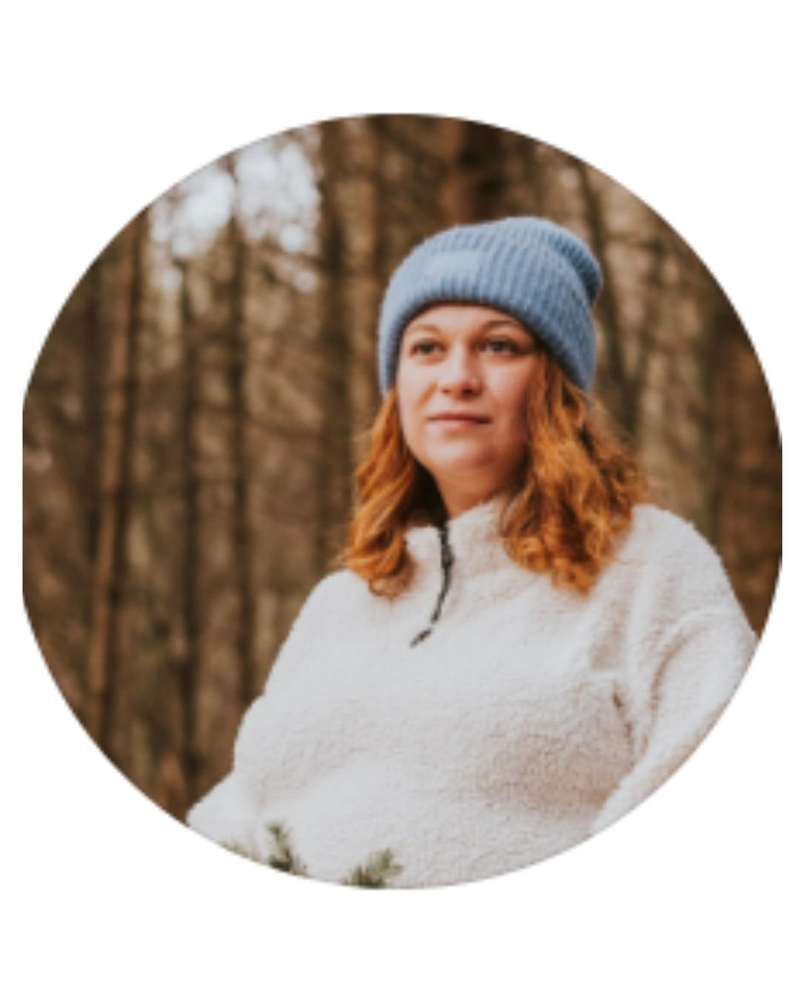
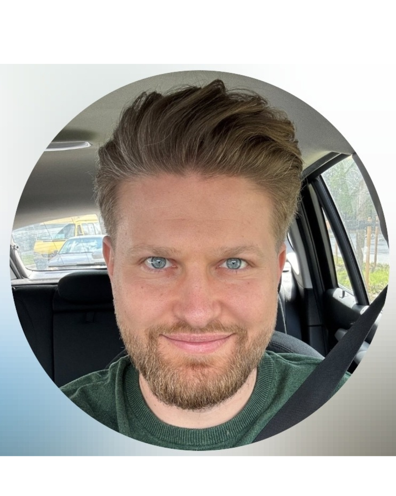

Your life looks successful from the outside, while something inside feels increasingly absent.
Blooming Soul Journeys
What if you don’t have to become more,
only come back to yourself?
This is where you stop surviving and start living.
Take the free assessment Find out how fulfilled are you, really?Maybe this feels familiar
You might be here because...
You overthink, overgive, and keep everyone else comfortable before checking what you need.
You know something needs to change, yet the same patterns keep quietly repeating.
You are ready for a different way of living, one that feels more honest, spacious, and yours.

Meet Roberta
This work was born from my own journey back to myself.
After more than a decade in corporate environments, I realised that success means very little when you no longer feel present inside your own life.
I now create spaces where women can slow down enough to hear themselves again and turn what they know into the way they actually live.
Read my story →Featured group experience
Beyond Surviving
For women who are tired of holding everything together while quietly losing themselves.
5 Sept – 3 Oct 2026Five Saturdays
09:00–12:00 CETLive online
10 womenSmall pilot group

You built the life you were supposed to want.
Now it is time to create the life you deeply want.
A journey, not a catalogue
Choose the depth that meets you now.
01
A held beginning
Beyond Surviving
For the moment when you know the way you have been living is no longer sustainable, even if the next step is not fully clear.
Explore →02
The bridge
The Freedom Within
A four-week guided journey to reconnect with your story, release what holds you back, and move with greater clarity.
Coming next →03
The deepest work
Inner Bloom
Private, deeply personalised support for the woman who is ready to remember who she is and create lasting inner change.
Coming next →Conscious Leadership & Team Growth
Helping leaders build workplaces where people don’t just perform.
They thrive.
Human, practical leadership development for healthier communication, stronger trust, and sustainable performance.
Explore leadership workClient words
Real stories. Real transformations.

“Roberta created a safe space where I could be vulnerable, rediscover my inner strength, and grow with compassion.”

“I learned to trust my own direction, make decisions with confidence, and see each step as part of the journey.”

“Working with Roberta feels like being gently guided by your own inner voice.”

“I discovered the strength in saying no without guilt and honouring my own needs.”

“I reconnected with my inner compass and rediscovered what truly matters.”

“Her calm, heart-centred presence helped me move from my head into my heart.”
A gentle first step back to yourself
How fulfilled are you, really?
See what has quietly been asking for your attention.
Sixteen thoughtful questions. Around five minutes. Instant personalised results.
Take the free assessment
Your next honest step
You do not need to have everything figured out before you begin.
You only need enough space to hear what has been true inside you for a long time.
Begin with the free assessment